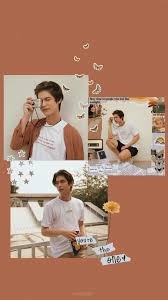
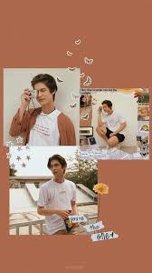
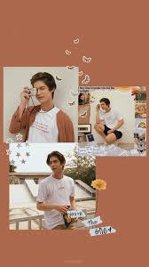

inicio
.jpeg) 


.jpeg)
.jpeg)
.jpeg)
bright comenzo con su actuacion en 2013 con la serie de the beginnig despues de esta serie
comenzo su debut con la serie karma como invetado i see u con el papel de pete u pesonaje
principal roop thong como ekkaarat, social death vole como day, love song como ter, love song:gor koey sunya como
ken mayormente los papel que imtrepeta son principales los papeles de imterpetracion de las
series 2gether una serie bl que imtepreto con mentawin la segunda temporada de still 2gether
su papel mas importante es de la serie f4 thailand con el personaje principal de thyme los f4
lider del grupo de la serie entras otras imtepretro
su vida personal la mantiene privada sin embargo la prensa y los medios de comunicacion continuan
ocasionando que lo que plublica ve es el con el en persona señanlandole como humilidey trabajador
en 2022 bright inicio "un arbol plantado" para agricultores empoderados y "derecho a juego"
"proteger educar empoderar" para los niños desafovorecidos
en abril de 2023la marca "ASTRO stuffs: WE MAKE GOOD STUJFF COMPANY LIMITED" entre 19
miembros de tailandia aparecion como miembros de BETTER COTTON INITIATIVA (BCI) un grupo de gobernanza de multiples
partes interesadas sin fines de lucro ,
contribuye a la objetivos de la naciones unidas para lograr una mejora sostenibilidad del agricultura
y una agricultura sostenible a nivel mundial
.jpeg)
.jpeg)